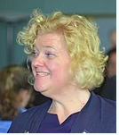
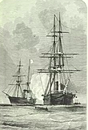

Welcome to Wikipedia,
the free encyclopedia that anyone can edit.
6,406,755 articles in English
James A. Doonan (November 8, 1841 – April 12, 1911) was an American Catholic priest and Jesuit who was the president of Georgetown University from 1882 to 1888. Born in Georgia, he studied at Georgetown before entering the Society of Jesus in 1857. During his formation, he taught at Loyola College in Maryland and Boston College. He also studied at Woodstock College and was ordained a priest in 1874. Doonan became a professor at Georgetown before being named president in 1882. He worked to offset the debt accrued during the construction of Healy Hall, and installed in front of the building two historic cannons that had been carried aboard Lord Baltimore's 1634 expeditionary voyage to Maryland. He also oversaw construction of a new building for the School of Medicine. After his presidency, Doonan continued teaching and engaging in pastoral work throughout the Northeastern United States. He died at Georgetown in 1911. (Full article...)
- ... that after men took all the 2021 Nobel Prizes for science, one of the selectors, Eva Olsson (pictured), said "we want to have more women nominated"?
- ... that the woman of the Chatti was allegedly a Germanic prophetess whose advice inspired Roman Emperor Vitellius to murder his own mother, Sextilia?
- ... that in October 2021, American wheelchair racer Yen Hoang came in the top three in marathons on consecutive days?
- ... that the first East German embassy in Africa opened in Zanzibar in 1964?
- ... that American Computer and Peripheral was the first company to offer a plug-in board for Intel's 386 processor?
- ... that thanks to the Advocate General's opinion, one is likely to know the outcome of a court case before the European Court of Justice before it even starts drafting the ruling?
- ... that SpaceX's reusable Starship launch vehicle has twice as much thrust as the Apollo program's Saturn V?
- ... that Canadian politician Above Znoneofthe chose his name so as to be placed last on alphabetical ballots?
- A crowd crush at the Astroworld Festival (location pictured) in Houston, Texas, leaves eight people dead and hundreds of others injured.
- At least 99 people are killed in a fuel tanker explosion in Freetown, Sierra Leone.
- Damon Galgut is awarded the Booker Prize for his novel The Promise.
- In baseball, the Atlanta Braves defeat the Houston Astros to win the World Series.
Ongoing: COVID-19 pandemic
Recent deaths: Adolfo de Bold. Siluyan .Frank Farrar .Tarak Sinha.Georgie Dann .
Muamer ZukorlićLionel Blair
November 8
- 1278 – Trần Thánh Tông, the second emperor of Vietnam's Trần dynasty, took up the title of retired emperor, but continued to co-rule with his son Nhân Tông for eleven more years.
- 1861 – American Civil War: The USS San Jacinto stopped the British mailship RMS Trent (depicted) and arrested two Confederate envoys en route to Europe, sparking a major diplomatic crisis between the United Kingdom and the United States.
- 1940 – The Italian invasion of Greece failed as outnumbered Greek units repulsed the Italians at the Battle of Elaia–Kalamas.
- 1971 – English rock group Led Zeppelin released their fourth album, which became one of the best-selling albums worldwide.
- 2016 – The Government of India announced the demonetisation of certain banknotes, causing prolonged cash shortages in the weeks that followed and significant disruption throughout the economy.